Fridovich-Keil*, Yu*, Tancik, Chen, Recht, Kanazawa · CVPR 2022
Seminar nhóm nghiên cứu tái tạo 3D · Tháng 9/2026
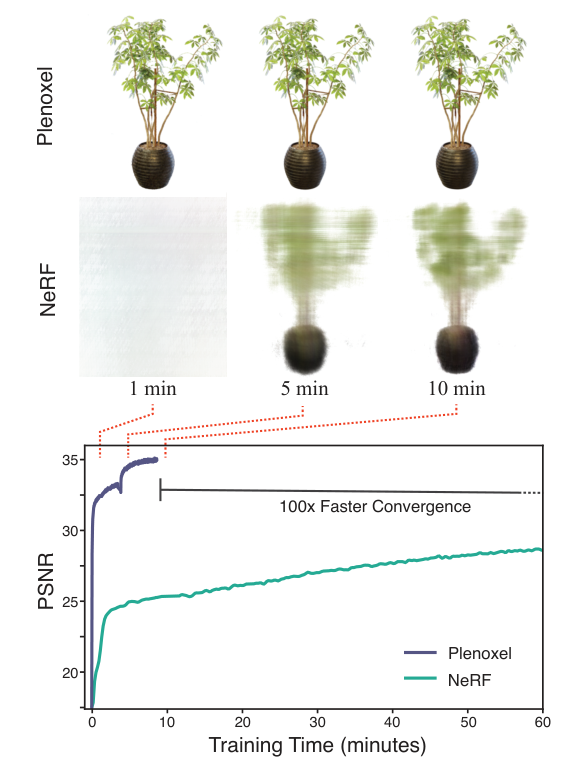
11 phút, so với khoảng 1 ngày của NeRF.
27 phút, so với khoảng 4 ngày của NeRF++.
| Phương pháp | Biểu diễn | Cách có tham số | Hạn chế |
|---|---|---|---|
| Lưới voxel, MPI cổ điển | voxel, ảnh đa mặt phẳng | khắc không gian, tô màu voxel | tốn bộ nhớ ở độ phân giải cao |
| Neural Volumes (2019) | lưới 128³ + hàm cong vênh | mạng CNN 3D dự đoán lưới | độ phân giải hiệu dụng thấp |
| NeRF (2020) | MLP 8 lớp | tối ưu trọng số mạng | 1–2 ngày huấn luyện, ≈ 30 s mỗi ảnh |
| PlenOctrees (2021) | cây bát phân, SH, hằng trong ô | chưng cất từ NeRF rồi tinh chỉnh | vẫn phải huấn luyện NeRF trước |
| Plenoxels | lưới thưa, SH, nội suy ba tuyến tính | tối ưu trực tiếp từ ảnh | 11–27 phút, không mạng |
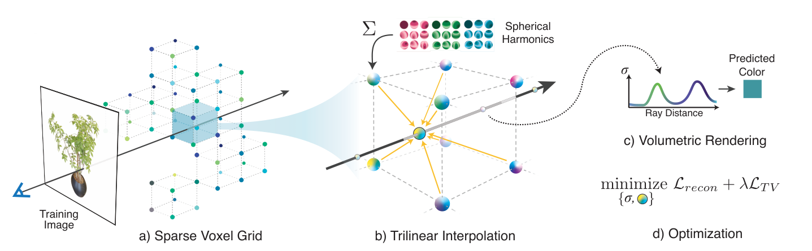
Biểu diễn: $\sigma$ và 27 hệ số SH tại mỗi đỉnh.
Nội suy: ba tuyến tính từ 8 đỉnh quanh mẫu.
Mô hình thuận: kết xuất thể tích như NeRF.
Tối ưu: MSE + TV, RMSProp, tỉa dần.
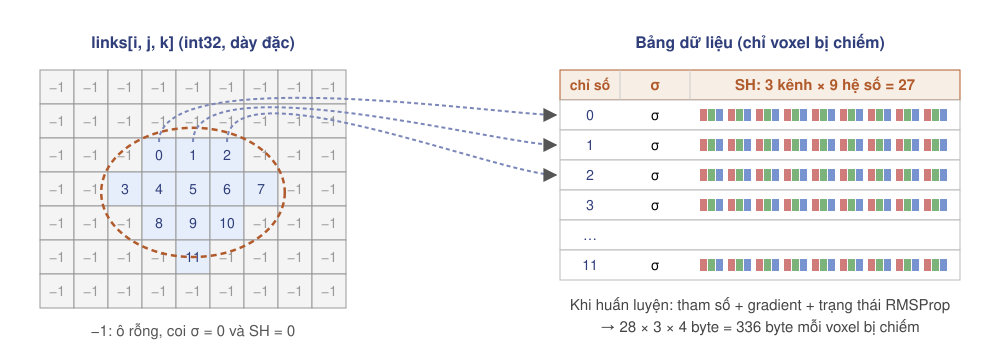
Mảng chỉ số dày đặc + bảng dữ liệu chỉ cho voxel bị chiếm. Không dùng cây bát phân để nội suy ba tuyến tính đơn giản.
4 byte mỗi ô của lưới đầy đủ cho con trỏ; 28 số mỗi voxel bị chiếm. Theo paper, đọc con trỏ tốn đáng kể thời gian kết xuất.
| $\ell=0$ | $0{,}2821$ |
| $\ell=1$ | $0{,}4886\,(-y,\;z,\;-x)$ |
| $\ell=2$ | $1{,}0925\,xy,\;-1{,}0925\,yz,\;-1{,}0925\,xz$ |
| $0{,}3154\,(2z^2-x^2-y^2),\;0{,}5463\,(x^2-y^2)$ |
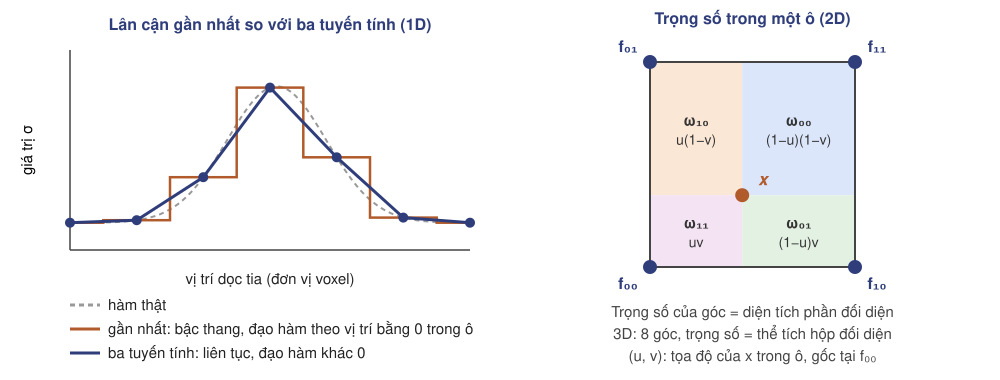
$(u,v,w)\in[0,1]^3$: tọa độ của $\mathbf x$ trong ô.
Áp dụng cho $\sigma$ và từng hệ số SH.
$\partial f/\partial f_{i+a,j+b,k+c}=\omega_{abc}$: gradient chỉ tới 8 voxel.
| Nội suy, độ phân giải | PSNR ↑ | SSIM ↑ | LPIPS ↓ |
|---|---|---|---|
| Ba tuyến tính, 256³ | 30,57 | 0,950 | 0,065 |
| Ba tuyến tính, 128³ | 28,46 | 0,926 | 0,100 |
| Gần nhất, 256³ | 27,17 | 0,914 | 0,119 |
| Gần nhất, 128³ | 23,73 | 0,866 | 0,176 |
Biểu diễn được biến thiên màu và mật độ bên trong một voxel.
Hàm liên tục, ổn định hơn khi đổi tỉ lệ học; mô hình hằng từng ô khó tối ưu.
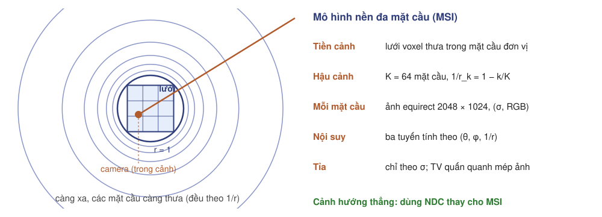
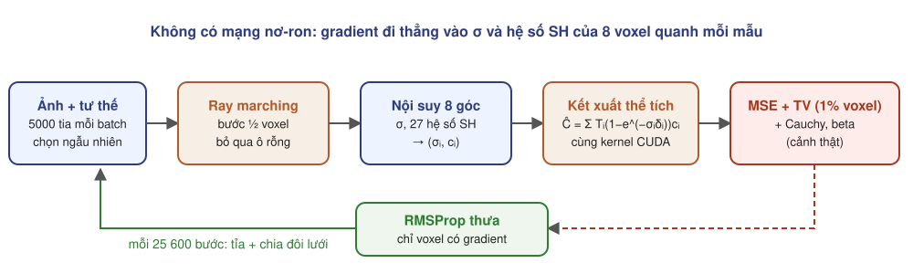
| Loại cảnh | $\lambda_{TV}$ cho $\sigma$ | $\lambda_{TV}$ cho SH | Ghi chú |
|---|---|---|---|
| Tổng hợp | $10^{-5}$ | $10^{-3}$ | chỉ 38 400 bước đầu |
| Hướng thẳng | $5\cdot10^{-4}$ | $5\cdot10^{-3}$ | suốt quá trình |
| 360°, tiền cảnh | $5\cdot10^{-5}$ | $5\cdot10^{-3}$ | suốt quá trình |
| 360°, hậu cảnh | $10^{-3}$ | $10^{-3}$ | quấn quanh mép ảnh |
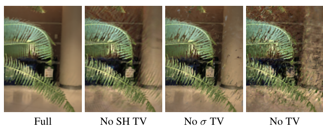
Đẩy mật độ tại mọi mẫu về 0.
Đẩy $T_{FG}$ về 0 hoặc 1.
| Hướng thẳng, 8 cảnh | PSNR | SSIM | LPIPS |
|---|---|---|---|
| TV SH + TV σ + thưa | 26,29 | 0,839 | 0,210 |
| bỏ thưa | 26,31 | 0,839 | 0,210 |
| bỏ TV σ | 25,25 | 0,807 | 0,226 |
| bỏ TV SH | 25,80 | 0,814 | 0,234 |
Hàng chục triệu biến, không lồi, điều kiện kém; RMSProp chuẩn hóa theo từng tham số, $\beta=0{,}95$.
$\sigma$: $\eta_0=30\to\eta_1=0{,}05$, $T=250\,000$, trễ $T_d=15\,000$. SH: mũ thuần $0{,}01\to5\cdot10^{-6}$.
| Bộ tối ưu (256³, tổng hợp) | PSNR | LPIPS |
|---|---|---|
| RMSProp cho SH và σ | 30,57 | 0,065 |
| RMSProp cho SH, SGD cho σ | 30,20 | 0,072 |
| SGD cho SH, RMSProp cho σ | 29,82 | 0,076 |
| SGD cho SH và σ | 29,35 | 0,087 |
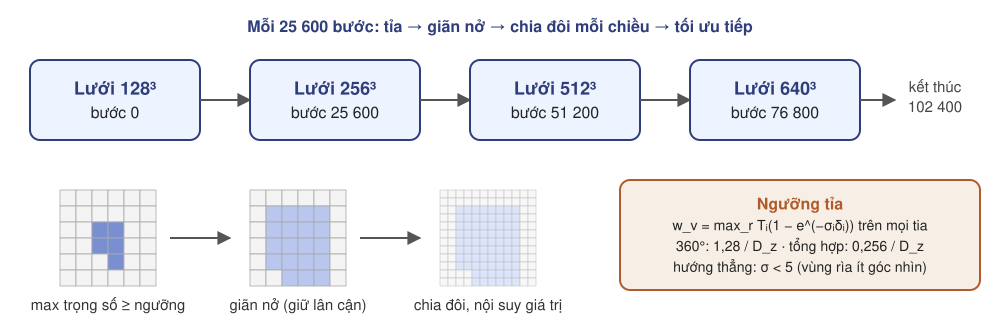
| Loại cảnh | Lịch độ phân giải | Tổng số bước | Tiêu chí tỉa |
|---|---|---|---|
| Tổng hợp | 256³ → 512³ ở bước 38 400 | 128 000 | trọng số, 0,256 |
| Hướng thẳng | 256×256×128 → 512×512×128 → 1408×1156×128 | 128 000 | $\sigma\lt5$ |
| 360° | 128³ → 256³ → 512³ → 640³, mỗi 25 600 bước | 102 400 | trọng số, 1,28 |
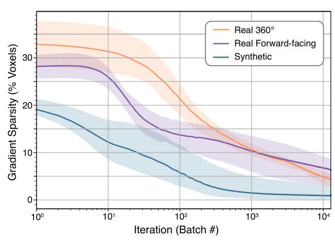
8 cảnh; 100 ảnh huấn luyện, 200 ảnh kiểm tra, 800×800, nền trắng.
8 cảnh; 20–60 ảnh 1008×756 chụp bằng điện thoại; 1/8 làm kiểm tra.
4 cảnh Tanks&Temples: M60, Playground, Train, Truck.
| Loại cảnh | Phương pháp | PSNR ↑ | SSIM ↑ | LPIPS ↓ | Huấn luyện |
|---|---|---|---|---|---|
| Tổng hợp (8) | Plenoxels | 31,71 | 0,958 | 0,049 | 11 phút |
| Neural Volumes | 26,05 | 0,893 | 0,160 | > 1 ngày | |
| JAXNeRF | 31,85 | 0,954 | 0,072 | 1,45 ngày | |
| Hướng thẳng (8) | Plenoxels | 26,29 | 0,839 | 0,210 | 24 phút |
| LLFF | 24,13 | 0,798 | 0,212 | —* | |
| JAXNeRF | 26,71 | 0,820 | 0,235 | 1,62 ngày | |
| 360° thật (4) | Plenoxels | 20,40 | 0,696 | 0,420 | 27 phút |
| NeRF++ | 20,49 | 0,648 | 0,478 | ≈ 4 ngày |
| Chair | Drums | Ficus | Hotdog | Lego | Materials | Mic | Ship | TB | |
|---|---|---|---|---|---|---|---|---|---|
| Plenoxels PSNR | 33,98 | 25,35 | 31,83 | 36,43 | 34,10 | 29,14 | 33,26 | 29,62 | 31,71 |
| JAXNeRF PSNR | 34,20 | 25,27 | 31,15 | 36,81 | 34,02 | 30,30 | 33,72 | 29,33 | 31,85 |
| Neural Volumes PSNR | 28,33 | 22,58 | 24,79 | 30,71 | 26,08 | 24,22 | 27,78 | 23,93 | 26,05 |
| Plenoxels thời gian | 9,6 ph | 9,8 ph | 8,8 ph | 12,5 ph | 10,8 ph | 11,0 ph | 8,2 ph | 18,0 ph | 11,1 ph |
| JAXNeRF thời gian | 37,8 h | 37,8 h | 37,7 h | 38,0 h | 26,0 h | 38,1 h | 37,8 h | 26,0 h | 34,9 h |
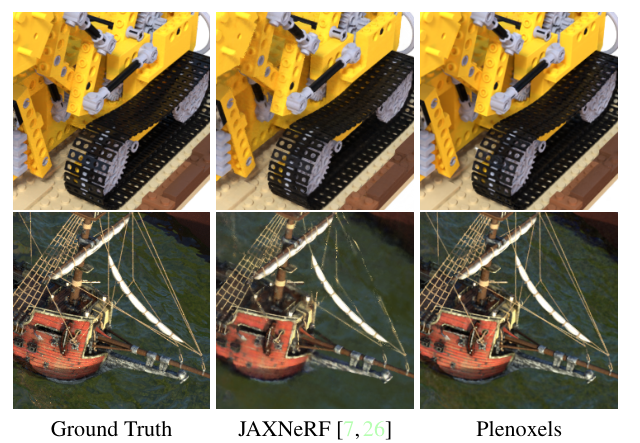
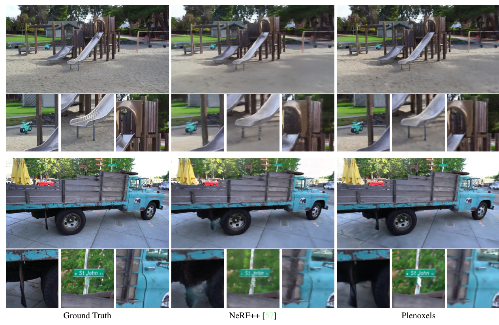
| 360° (PSNR) | Plenoxels | NeRF++ |
|---|---|---|
| M60 | 17,93 | 18,49 |
| Playground | 23,03 | 22,93 |
| Train | 17,97 | 17,77 |
| Truck | 22,67 | 22,77 |
| Thời gian TB | 27,3 phút | ≈ 4 ngày |
| Hướng thẳng (PSNR) | Plenoxels | JAXNeRF |
|---|---|---|
| Fortress | 31,09 | 31,57 |
| Leaves | 21,41 | 21,10 |
| Room | 30,22 | 32,81 |
| Thời gian TB | 24,2 phút | 38,8 h |
| Độ phân giải | PSNR ↑ | SSIM ↑ | LPIPS ↓ |
|---|---|---|---|
| 512³ | 31,71 | 0,958 | 0,050 |
| 256³ | 30,57 | 0,950 | 0,065 |
| 128³ | 28,46 | 0,926 | 0,100 |
| 64³ | 26,11 | 0,892 | 0,139 |
| 32³ | 23,49 | 0,859 | 0,174 |
| Số ảnh, TV | PSNR ↑ | SSIM ↑ | LPIPS ↓ |
|---|---|---|---|
| Plenoxels: 100 ảnh, TV thấp | 31,71 | 0,958 | 0,050 |
| NeRF: 100 ảnh | 31,01 | 0,947 | 0,081 |
| Plenoxels: 25 ảnh, TV thấp | 26,88 | 0,911 | 0,099 |
| Plenoxels: 25 ảnh, TV cao | 28,25 | 0,932 | 0,078 |
| NeRF: 25 ảnh | 27,78 | 0,925 | 0,108 |
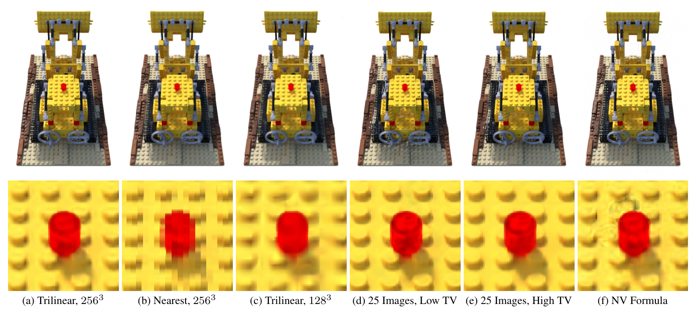
| Công thức | PSNR | LPIPS |
|---|---|---|
| Max (dùng trong NeRF) | 30,57 | 0,065 |
| Neural Volumes | 27,54 | 0,201 |
Max: mẫu $i$ hấp thụ một tỉ lệ của ánh sáng còn lại, phụ thuộc mọi mẫu phía trước. NV: độ mờ tuyệt đối, chỉ phụ thuộc mẫu $i$, tổng bị cắt ở 1. Khác biệt 3,0 dB.
| Phương pháp | PSNR | Mip-NeRF 360 | ||||
|---|---|---|---|---|---|---|
| Mip-NeRF 360 | T&T | Deep Blending | Huấn luyện | FPS | Bộ nhớ | |
| Plenoxels | 23,08 | 21,08 | 23,06 | 25 ph 49 s | 6,79 | 2,1 GB |
| INGP-Base | 25,30 | 21,72 | 23,62 | 5 ph 37 s | 11,7 | 13 MB |
| INGP-Big | 25,59 | 21,92 | 24,96 | 7 ph 30 s | 9,43 | 48 MB |
| Mip-NeRF 360 | 27,69 | 22,22 | 29,40 | 48 h | 0,06 | 8,6 MB |
| 3DGS-30K | 27,21 | 23,14 | 29,41 | 41 ph 33 s | 134 | 734 MB |
| Cấu hình (ảnh giảm 4 lần) | Huấn luyện ở | Lưới lưu | Voxel bị chiếm | Thời gian | PSNR kiểm tra |
|---|---|---|---|---|---|
| Bonsai, 1 epoch, không nâng lưới | 64³ | 64³ | 148 258 (56,6%) | 1,49 ph | 22,08 dB |
| Bonsai, 1 epoch, rồi tỉa và nâng lưới | 64³ | 128³ | 78 475 (3,7%) | 1,30 ph | 22,34 dB |
| Bonsai, 2 epoch | 64³ → 128³ | 256³ | 280 369 (1,7%) | 2,93 ph | 23,66 dB |
| Room, 2 epoch | 64³ → 128³ | 256³ | 1 530 159 (9,1%) | 3,14 ph | 25,61 dB |
Khai báo 64³ → 128³ → 256³, 25 600 bước, hậu cảnh 16 lớp × 256 (paper: tới 640³, 102 400 bước, 64 lớp × 2048×1024).
Một epoch (≈ 1,3 phút) đã đạt 22,1–22,3 dB; epoch thứ hai ở 128³ thêm 1,3–1,6 dB. Tỉa chỉ giữ 1,7% ô ở bonsai, 9,1% ở room.
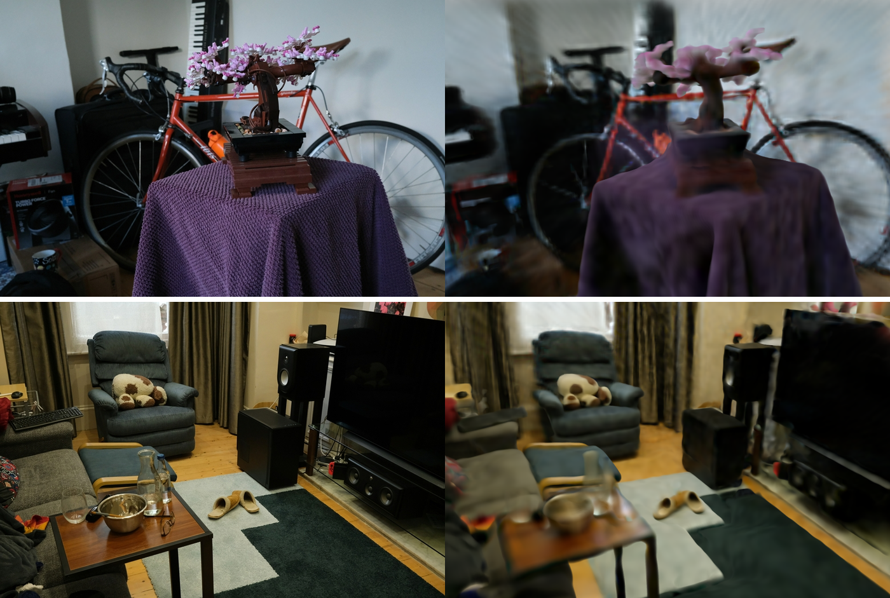
lưới con trỏ $O(D^3)$, mô hình 2,1–2,7 GB
kém Instant-NGP và 3DGS 2–7 dB
$\lambda_{TV}$ theo cảnh, ngưỡng tỉa
lỗi giả riêng, không khử răng cưa
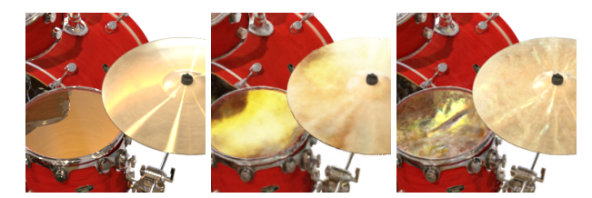
| Thành phần checkpoint | Bonsai 256³ | Room 256³ | Kích thước |
|---|---|---|---|
| Lưới con trỏ (int32) | 67,1 MB (57%) | 67,1 MB (35%) | $4D^3$ byte |
| Hệ số SH (float16) | 15,1 MB | 82,6 MB | $54N$ byte |
| Mật độ (float32) | 1,1 MB | 6,1 MB | $4N$ byte |
| Hậu cảnh 16 lớp | 33,6 MB | 33,6 MB | cố định |
| Tổng (tệp) | 117 MB | 190 MB | $N$ = 0,28 / 1,53 triệu |
| Cảnh | Plenoxels | 3DGS | RadFoam | Plenoxels − 3DGS |
|---|---|---|---|---|
| Room | 27,59 | 30,63 | 30,87 | −3,04 |
| Counter | 23,63 | 28,70 | 28,59 | −5,07 |
| Bonsai | 24,67 | 31,98 | 32,15 | −7,31 |
| Kitchen | 23,42 | 30,32 | 31,40 | −6,90 |
| Bicycle | 21,92 | 25,25 | 24,19 | −3,33 |
| Garden | 23,49 | 27,41 | 26,58 | −3,92 |
| Stump | 20,66 | 26,55 | 25,48 | −5,89 |
| DrJohnson | 23,14 | 28,77 | 28,33 | −5,63 |
| Playroom | 22,98 | 30,04 | 29,56 | −7,06 |
| Hiện tượng ở bản lưới dày ban đầu | Nguyên nhân | Plenoxels làm khác |
|---|---|---|
| Chậm: ≈ 350 ms mỗi vòng ở 128³ | TV L1 trên toàn lưới SH: 124 ms mỗi vòng | TV đẳng hướng trên 1% voxel → ≈ 80 ms mỗi vòng |
| PSNR giảm sau khi nâng lưới: 21,18 → 20,89 dB | nâng quá sớm, giữ 100% voxel, đặt lại Adam | tỉa theo trọng số, giãn nở, RMSProp |
| PSNR chững ở ≈ 21,8 dB | sương mù dày, không Cauchy và beta, không hậu cảnh | Cauchy, beta, hậu cảnh đa mặt cầu |
| Dừng tia quá sớm | ngưỡng $T\lt10^{-3}$ | ngưỡng $T\lt10^{-7}$ |
| Màu nhiễu | $\lambda_{TV}$ cho SH bằng $10^{-6}$ | $5\cdot10^{-3}$, gấp 100 lần của $\sigma$ |
| Vấn đề | Phương pháp | Ý tưởng |
|---|---|---|
| Hội tụ nhanh với lưới dày | DVGO (CVPR 2022) | lưới mật độ + lưới đặc trưng, MLP nông |
| Bộ nhớ $O(D^3)$ | TensoRF (ECCV 2022) | phân rã tensor (CP, VM) của lưới đặc trưng |
| Bộ nhớ và tốc độ | Instant-NGP (SIGGRAPH 2022) | bảng băm đa phân giải + MLP rất nhỏ |
| Cảnh động, phân rã | K-Planes (CVPR 2023) | tích các mặt phẳng đặc trưng 2D |
| Lưới đều cứng nhắc, kết xuất chậm | 3DGS (2023) | phần tử tường minh không cấu trúc, rasterization (chuyên đề 04) |
| Phân hoạch thích nghi | RadFoam (2025) | ô Voronoi thay voxel, tích phân chính xác (chuyên đề 05) |
| Huấn luyện RadFoam chậm | đề xuất nội bộ | chạy Plenoxels 2–3 phút rồi chuyển sang bọt Voronoi |
| Thành phần | Công thức hoặc giá trị | Vai trò |
|---|---|---|
| Biểu diễn | lưới thưa; mỗi voxel $\sigma$ + 27 hệ số SH bậc 2 | tường minh, không mạng |
| Nội suy | ba tuyến tính từ 8 đỉnh | liên tục, độ phân giải hiệu dụng cao |
| Tạo ảnh | $\hat C=\sum_i T_i(1-e^{-\sigma_i\delta_i})\mathbf c_i$ | giống NeRF |
| Mục tiêu | MSE + TV (+ Cauchy, beta với cảnh thật) | chính quy hóa bài toán ngược |
| Tối ưu | RMSProp, 5000 tia, TV trên 1% voxel, tỉa và chia đôi lưới | 11–27 phút trên một GPU |